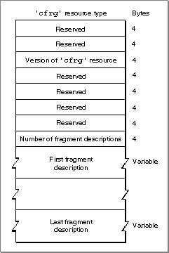
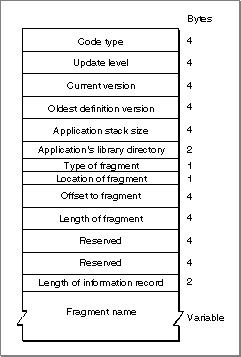

The Code Fragment Resource
You use a code fragment resource to specify some characteristics of a code fragment. For an application, the code fragment resource indicates to the Process Manager that the application's data fork contains an executable code fragment. For an import library, the code fragment resource specifies the library's name and version information.Figure 3-1 shows the structure of a compiled code fragment resource.
- IMPORTANT
- A code fragment resource must have resource ID 0.
Figure 3-1 Structure of a compiled code fragment (
'cfrg') resource
The compiled version of a code fragment resource contains the following elements:Following the array count is an array of code fragment information records. A single file can include one or more containers. Similarly, it might occasionally be useful to assign more than one name to a single import library or application. Typically, however, both applications and import libraries include just a single code fragment information record in their
- Reserved. The first two long integers are reserved and should be set to 0.
- Version information. This field specifies the current version of the
'cfrg'resource. The current version is 0x00000001.- Reserved. The next four long integers are reserved and should be set to 0.
- Number of fragment descriptions. This field specifies the number of code fragment information records that follow this field in the resource. (The value in this field should be the actual number of information records that follow, beginning with 1.)
'cfrg'resources. Each record has the format illustrated in Figure 3-2.Figure 3-2 The format of a code fragment information record

A code fragment information record contains the following elements:
- The instruction set architecture. You can use the Rez constant
kPowerPC('pwpc') to specify the PowerPC instruction set architecture.- The update level. For an import library, you can specify either the value
kFullLib(0), to indicate that the library is a base library (not an update of some other library), or the valuekUpdateLib(1), to indicate that the library updates only part of some other library. Applications should specify the valuekFullLibin this field.- The current version number. For an import library, this field specifies the implementa-
tion version. This field has the same format as the first 4 bytes of a resource of type'vers'. See the chapter "Finder Interface" in Inside Macintosh: Macintosh Toolbox Essentials for details on the structure of a'vers'resource.- The oldest definition version number. For an import library, this field specifies the oldest version of the definition library with which the implementation import library is compatible. This field has the same format as the first 4 bytes of a resource of
type'vers'.- The application stack size. For an application, this field specifies the minimum size, in bytes, of the application stack. You can use the Rez constant
kDefaultStackSize(0) to indicate that the stack should be given the default size for the current software and hardware configuration. If you determine at run time that your application needs a larger or smaller stack, you can use the standard stack-adjusting techniques that callGetApplLimitandSetApplLimit.- The application's library directory. For an application, this field specifies the resource ID of an alias resource (a resource of type
'alis') in the application's resource fork that describes the application's load directory. See "Import Library Searching" on page 3-5 for more information about load directories. For information about alias resources, see the chapter "Alias Manager" in Inside Macintosh: Files.- A usage field. This field specifies the type of fragment that this record describes. The value
kIsLib(0) indicates that the fragment is an import library. The valuekIsApp(1) indicates that the fragment is an application. The valuekIsDropIn(2) indicates that the fragment is an extension. The Code Fragment Manager recognizes only the valueskIsLibandkIsApp. The valuekIsDropInis provided to allow you to put private application extensions in a file and not have the Code Fragment Manager recognize them as shared libraries.- A location field. This field specifies the location of the fragment's container. The value
kInMem(0) indicates that the container is in memory (usually in ROM). This value is intended for use by the Operating System; in general, you should not use it. The valuekOnDiskFlat(1) indicates that the container is in the data fork of some file. The valuekOnDiskSegmented(2) indicates that the container is in a resource in the resource fork of some file.- The offset to the beginning of the fragment. The interpretation of this field depends
on the value specified in the location field immediately preceding this field. If the location field has the valuekInMem, this field is the address in memory of the begin-
ning of the fragment. If the location field has the valuekOnDiskFlat, this field is the number of bytes from the beginning of the data fork to the beginning of the fragment itself. You can use the Rez constantkZeroOffset(0) to specify an offset of 0 bytes. If the location field has the valuekOnDiskSegmented, this field is the resource type (of typeOSType) of the resource that contains the fragment.- The length of the fragment. The interpretation of this field depends on the value specified in the location field immediately preceding the offset field. If the location field has the value
kInMem, this field is the address in memory of the end of the fragment. If the location field has the valuekOnDiskFlat, this field is the length, in bytes, of the fragment. You can use the Rez constantkWholeFork(0) to indicate that the fragment occupies the entire fork. If the location field has the valuekOnDiskSegmented, this field is the sign-extended resource ID of the resource that contains the fragment.- Reserved. The next two long integers are reserved and should be set to 0.
- The total length of the code fragment information record. This field specifies
the length, in bytes, of this code fragment information record, including the
fragment name and any pad bytes added to the name field.- The fragment's name. This field is a Pascal string that indicates the name of the application or import library. This is the default name used by the debugger for this fragment. This field is padded with null bytes, if necessary, so that the information record extends to a 4-byte boundary.